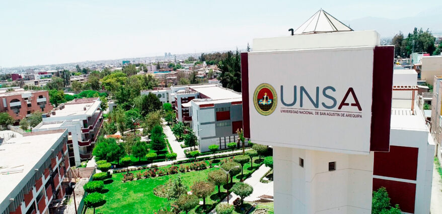
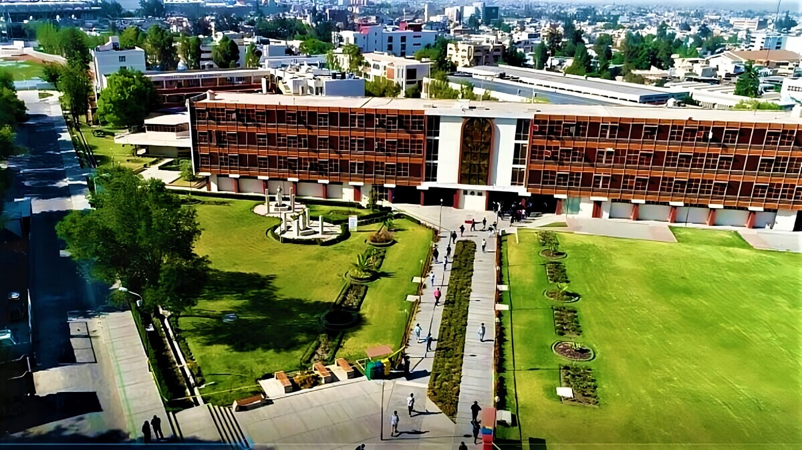
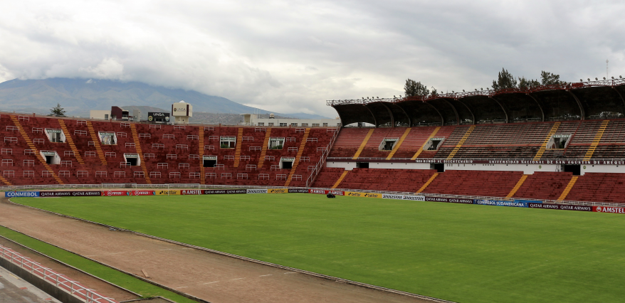

Universidad Nacional de San Agustín
Fundada el 11 de noviembre de 1828.
con el nombre de la Universidad del Gran Padre San Agustín
del Departamento de Arequipa. Actualmente la UNSA cuenta
con 18 facultades y 46 escuelas profesionales en las áreas de
ingeniería, ciencias sociales y biomédicas.
El 24 de agosto de 2018, la Sunedu otorgó el licenciamiento
institucional por diez años tras demostrar haber cumplido
las condiciones básicas de calidad.
Tienen acreditaciones por parte de Icacit y Sineace.
La escuela de ingeniería de sistemas está acreditada
internacionalmente por ABET.
La universidad se destaca por sus tres campus principales
y por ser la segunda universidad pública más grande de Perú.



Volver a la página principal